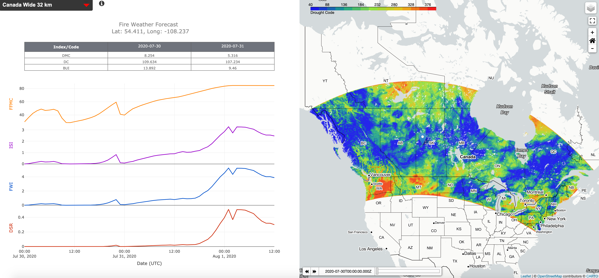

Welcome to Fire Weather Forecast Model¶
Overview:¶
The Fire Weather Forecast (FWF) model is built off a preexisting fire-weather model, the Fire Weather Index System (FWI). The FWI system developed by Van Wanger and Pickett estimates how past/current/future weather conditions affect the moisture content within varied forest fuel layers across Canada. Knowing the fuel moisture content at all locations enables fires management agencies to understand where fires may occur and how fast they may grow/spread.
The new FWF model differs from current FWI models by fully utilizing a numerical weather prediction (NWP) model. Fuel moisture codes/indices are calculated at every grid point within the NWP model at a 4 km spatial resolution. The Fine Fuel Moisture Code, Initial Spread Index, and Fire Weather Index are resolved at a one-hour temporal resolution while the Duff Moisture Code, Drought Code and Build up Index are solved once daily at noon local. This idffers from current FWI models that calculate all moisture codes/indices once daily on noon local at 900 point locations across Canada and interpolate to fill the void.
{kind=link}